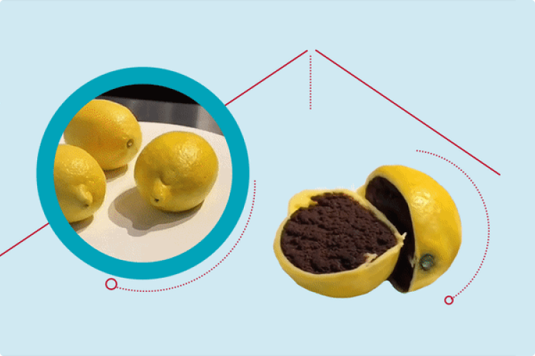
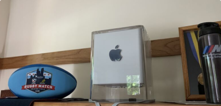

Cake meme reflects coronavirus absurdity in a world where nothing is what it seems
Earlier this month, a viral video depicting hyper-realistic cakes as everyday items had folks on social media double-guessing every other post, and sometimes even their own realities, effectively launching the next meme : “Is this real or is this cake?”
2 hours ago
Kanye West says he's running for president in 2020.
John Lewis to make final journey across Edmund Pettus Bridge in procession
The body of the late US Rep. John Lewis on Sunday will make the final journey across the famous bridge in Selma, Alabama, where he helped lead a march for voting rights in 1965.
2 hours ago
28
 72
72

72

John Lewis, civil rights giant, crosses infamous Selma bridge one final time
Solemn crowds watch as Lewis, who died earlier this month at the age of 80, is borne by caisson over Edmund Pettus Bridge
4 hours ago
28
72
72
Tornado and tide warnings as Storm Hanna lashes Texas
The body of the late US Rep. John Lewis on Sunday will make the final journey across the famous bridge in Selma, Alabama, where he helped lead a march for voting rights in 1965.
5 hours ago
28
72
72

20 Years Ago, Steve Jobs Built the ‘Coolest Computer Ever.’ It Bombed
This month marks the 20th anniversary of the Power Mac G4 Cube, which debuted July 19, 2000. It also marks the 19th anniversary of Apple’s announcement that it was putting the Cube on ice.
12 hours ago
28
72
72
Live

Beloved Arizona coach loses battle with coronavirus
Location News